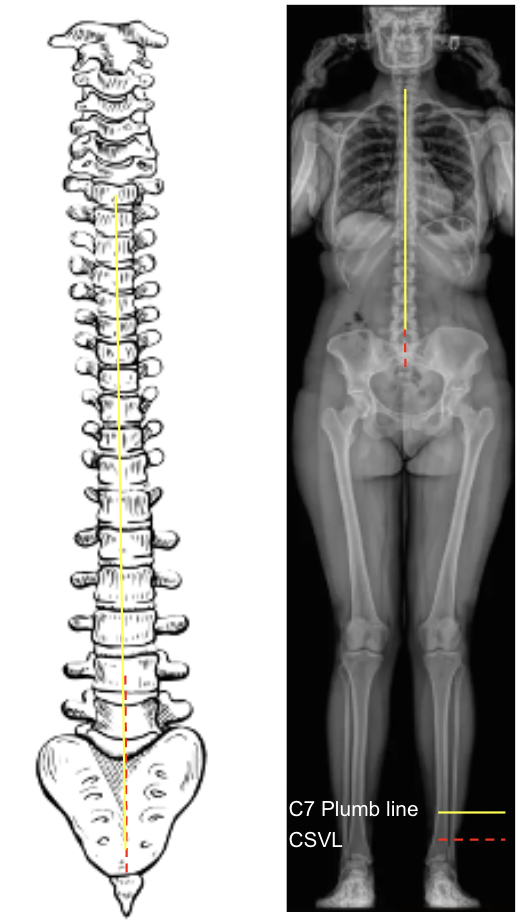

1) Description of Measurement
Coronal Balance is a radiographic parameter used to assess lateral (side-to-side) alignment of the spine in the coronal plane. It quantifies how well the head and trunk are centered over the pelvis when viewed from the front (AP or PA full-length spine X-ray).
It is an essential measurement for evaluating scoliosis, compensatory curves, and postoperative deformity correction.
Coronal balance helps determine whether the spine is globally aligned (balanced) or deviated laterally (imbalanced), reflecting the relationship between the C7 vertebral body and the central sacral vertical line (CSVL).
2) Instructions to Measure
3) Normal vs. Pathologic Ranges
4) Important References
Ma Q, Wang L, Zhao L, et al. Coronal Balance vs. Sagittal Profile in Adolescent Idiopathic Scoliosis, Are They Correlated? Front Pediatr. 2020 Jan 10;7:523. doi: 10.3389/fped.2019.00523.
Schwab FJ, Lafage V, Boyce R, et al. Gravity line analysis in adult volunteers: age-related correlation with spinal parameters, pelvic parameters, and foot position. Spine. 2006;31(25):E959–E967.
El-Hawary R, Chukwunyerenwa C. Update on evaluation and treatment of scoliosis. Pediatr Clin North Am. 2014 Dec;61(6):1223-41. doi: 10.1016/j.pcl.2014.08.007. Epub 2014 Sep 12.
Lafage V, Schwab F, Skalli W, et al. Standing balance and alignment in adult spinal deformity: analysis of spinopelvic and gravity line parameters. Spine. 2008;33(14):1572–1578.
5) Other info....
Coronal Balance provides a global assessment of spinal alignment, complementing sagittal balance measures such as Sagittal Vertical Axis (SVA).
In scoliosis, the goal of correction is to restore the C7 plumb line to within 2 cm of the CSVL, indicating balanced correction.
Pelvic obliquity or leg length discrepancy can affect coronal balance — these should be corrected or accounted for when measuring.
Postoperative coronal imbalance can lead to compensatory trunk shift, shoulder asymmetry, or impaired functional outcomes.
EOS low-dose imaging or stitched long-cassette radiographs are preferred for accurate, full-body coronal assessment.
Always record the direction and magnitude of imbalance, as well as whether the deviation is structural (curve rigidity) or compensatory (pelvic or leg-length related).